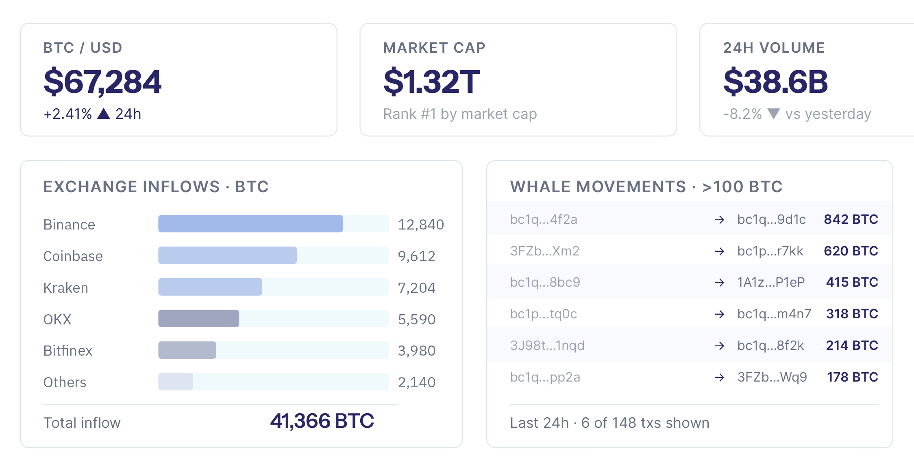
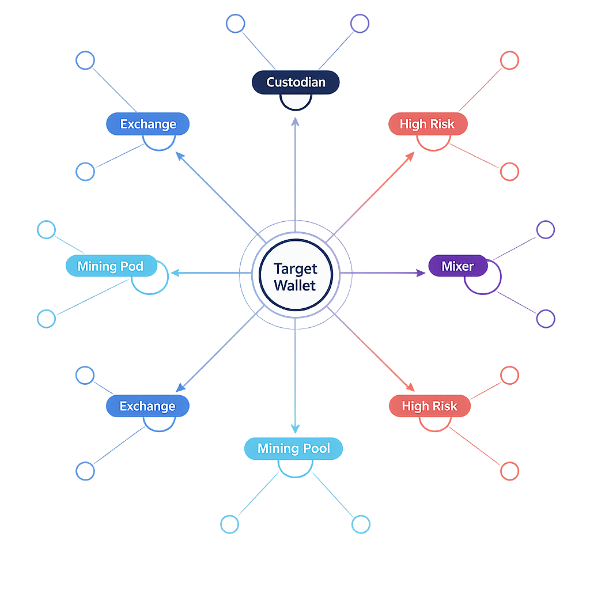

Intelligence for
next-generation enterprises
We help businesses thrive on-chain through research, data infrastructure, and expert consultation. Built for institutions that need precision, not approximations.
Three pillars of on-chain intelligence
Our analytics stack covers the full lifecycle of blockchain data: raw infrastructure, entity labeling, and applied intelligence for compliance and business decisions.
Data Sandbox
A comprehensive data sandbox for in-depth Bitcoin analytics. Track transaction histories, analyze market trends, and identify patterns within the blockchain. Built for developers and analysts requiring robust, programmable access to on-chain data.
Learn moreWallet Labels
Wallet labeling services for on-chain analytics that identify and categorize entities across the blockchain. Essential for AML compliance, risk management, and business intelligence firms tracking fund flows and transaction provenance.
Learn moreAnalytics Services
AML risk and fraud services, business intelligence, and bespoke analytics including source and destination of funds tracking, fraud detection, collusion prevention, wallet connectedness analysis, and competitor profiling.
Learn moreData Sandbox for Bitcoin Analytics
OTC Services has built a comprehensive data sandbox tailored for Bitcoin analytics. This infrastructure allows businesses to perform in-depth analysis of Bitcoin transactions and blockchain data.
The library includes transaction history tracking, market trend analysis, and blockchain pattern identification. It is the foundation for developers and analysts working with Bitcoin who need robust, programmable access to on-chain data.
Request Access
Wallet Labels
We provide wallet labeling services for companies involved in on-chain analytics. This service is critical for AML and risk companies and business intelligence firms. By labeling wallets, OTC Services helps these organizations identify and categorize entities on the blockchain.
This aids in tracking the source and destination of funds, fraud detection, regulatory compliance, customer profiling, and competitor analysis.
Use Cases
Analytics Services
Applied analytics across three service areas: AML risk and fraud, business intelligence, and consulting.
AML Risk and Fraud
Source and destination of funds tracking, fraud detection, collusion and bonus abuse prevention, and wallet connectedness analysis. Purpose-built for compliance teams.
Business Intelligence
Customer profiling, customer segmentation, rich wallet discovery, and competitor analysis. Actionable intelligence that supports informed business decisions.
Consulting
Bespoke analytics, geographic origin of funds analysis, and tailored solutions designed for your specific operational requirements and compliance obligations.
Frequently Asked Questions
We offer a range of data analytics services focused on blockchain technology, particularly the Bitcoin network. Our services include labeling wallets, scanning addresses to identify connections, tracing funds across the Bitcoin blockchain, and performing fraud detection for our partners.
We use advanced algorithms and analytical tools to label wallets and scan addresses on the Bitcoin blockchain. This identifies connections between addresses, traces the flow of funds, and detects suspicious activity. By mapping these connections, we provide valuable insights into relationships between different entities on-chain.
Address detection involves analyzing the blockchain to determine if different wallet addresses are connected, directly or indirectly. This is critical for identifying patterns of fraudulent activity such as money laundering or unauthorized transactions. Our fraud detection services help partners safeguard assets and maintain transaction integrity by identifying risks early.
Yes. We are actively developing technology to expand services across additional blockchains. As the blockchain ecosystem evolves, we aim to provide comprehensive analytics and fraud detection across multiple networks, ensuring our partners have the tools to navigate a multi-chain environment.
Ready to get started?
Contact our team to learn more about our analytics services and how we can support your business.
Talk to Us